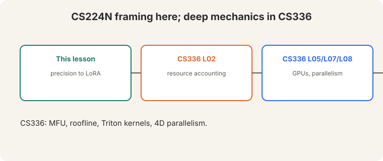

Lecture 12: Efficient Training (Bridge)
Video blocked (ad-blocker or local file mode).
Watch on YouTubeVideo not loading? Watch on YouTube
Guest lecture. Shikhar Murty covers precision, distributed training, and parameter-efficient fine-tuning.
Bridge lesson. This lecture teaches the CS224N framing: what costs memory and how to cut it. For deep systems, follow the links: CS336 L02 (FLOPs, bytes, roofline), CS336 L05 (GPUs), CS336 L07 and L08 (parallelism at scale), CS336 L06 (kernels). This lesson never re-explains what those cover.
How to read this lesson
This lesson has two levels. Level 1 (Core) covers precision and the memory budget. Level 2 (Deep) covers distributed training, LoRA, and sustainability.
Level 1: Precision formats
Three formats:

- fp32: 4 bytes per parameter. Full dynamic range.
- fp16: 2 bytes. Narrow range: tiny gradients underflow to zero, so training needs gradient scalers.
- bf16 (“brain float 16”, 11:39 ⏱11:39): 2 bytes, 8 exponent bits. Same range as fp32, less precision. No scalers needed (12:02 ⏱12:02). Needs Ampere or newer: H100, A100, A6000 (12:22 ⏱12:22).
Level 1: The memory budget
Mixed-precision training keeps several copies per parameter:

- Parameters (fp16): 2 bytes.
- Gradients (fp16): 2 bytes.
- Master weights (fp32): 4 bytes.
- Momentum (fp32): 4 bytes.
- Variance (fp32): 4 bytes.
16 bytes per parameter, on every GPU. Optimizer states dominate. Activations add more, scaling with batch size: gradient checkpointing trades recompute for activation memory (37:58 ⏱37:58).
fp16 cannot represent tiny updates: they round to zero and training stalls. The fp32 master accumulates the small steps exactly. The fp16 copy is for fast math. Precision where it matters, speed where it counts. The optimizer states: 12 of the 16 bytes. ZeRO stage 1 shards them across GPUs. Parameters are last, because sharding them costs communication on every forward pass.
Level 2: Data parallel and ZeRO
DDP (distributed data parallel): each GPU holds a full copy, runs forward and backward on different data, then synchronizes gradients with all-reduce (16:25 ⏱16:25). Communication: 2 bytes per parameter (16:47 ⏱16:47).

ZeRO (Microsoft DeepSpeed) shards instead of replicating:
- Stage 1: shard optimizer states.
- Stage 2: add gradients.
- Stage 3: add parameters.
Reduce-scatter replaces all-reduce under sharding. FSDP is PyTorch’s ZeRO-3. When even batch-1 does not fit, shard first, checkpoint second.
Level 2: LoRA
PEFT (parameter-efficient fine-tuning) exists for two reasons: (1) the model does not fit even at batch size 1, (2) small data plus an overparameterized model generalizes better with fewer trained parameters.
LoRA: gradients have low intrinsic rank (45:38 ⏱45:38). Freeze W. Train a low-rank delta:

W + (alpha/r) x B x A
- B is d-by-r, A is r-by-k. Train only A and B.
- Apply to attention matrices.
- r is a slider: larger r approaches full fine-tuning.
- Merge at inference: fold BA into W. No extra latency.
Alternatives: adapters, BitFit. LoRA won on the merge property.
Fine-tuning gradients live in a low-dimensional subspace: the task needs only a few directions of change. LoRA parameterizes exactly those directions. The rank r trades expressivity for parameters. When the task needs large changes everywhere: a new language, a new modality, or pretraining-scale shifts. Then the low-rank assumption breaks and full fine-tuning (or continued pretraining) wins.
Level 2: Sustainability
The lecture’s closing chart: largest-model training compute (red) versus global compute capacity (blue). “Not sustainable” (39:56 ⏱39:56). Training demand outruns capacity. Concentration follows: few organizations can train frontier models.

Recap: the whole lesson on one screen
Eight ideas carry this lecture. Read each card. Say the core sentence out loud. If you can, you own the lesson.
fp32: 4 bytes. fp16: 2 bytes, needs grad scalers. bf16: 2 bytes, 8 exponent bits, fp32 range, no scalers. Needs Ampere+.
Key: brain float 16
2 + 2 + 4 + 4 + 4: params, grads, master, momentum, variance. Optimizer states dominate. Checkpoint activations.
Key: 16B/param per GPU
Full copy per GPU. Different data. All-reduce gradients: 2 bytes per parameter of communication.
Key: synchronize gradients
Stage 1: optimizer. Stage 2: + gradients. Stage 3: + parameters. Reduce-scatter. FSDP in PyTorch.
Key: shard the 12 bytes first
W + (alpha/r)BA. Train A and B only. Attention matrices. r slides to full fine-tuning. Merge at inference.
Key: low intrinsic rank
Batch-1 does not fit. Small data plus overparameterization: fewer trained parameters generalize better.
Key: fit and generalize
Largest-model demand outruns global capacity. Concentration: few organizations can train frontier models.
Key: 39:56 ⏱39:56

Resource accounting (L02), GPUs (L05), parallelism (L07, L08), Triton (L06). This lesson: the framing.
Key: bridge, not duplicate
Official sources and further reading
Official: - Lecture 12 video and transcript. - Hu et al. (2021): LoRA. - Rajbhandari et al. (2020): ZeRO.
Further reading: - CS336 L02: the full memory and FLOPs accounting. - CS336 L08: 4D parallelism at scale. - Micikevicius et al. (2018), “Mixed Precision Training”: the fp16 recipe with grad scalers.
Caveats from these sources. “16 bytes per parameter” is the Adam mixed-precision budget. Other optimizers differ. The sustainability chart is the lecture’s illustration, not a measured forecast.
Connections to the other courses
- This course: L08-L10 built the models. This lecture trains them affordably. L15 continues the alignment-efficiency story.
- CS336: L02 (accounting), L05 (GPUs), L06 (kernels), L07-L08 (parallelism) carry the deep systems.
- CS229S: low-rank updates are the same mathematics as matrix approximation.
Efficient training cheatsheet. fp32 4B. Fp16 2B + scalers. Bf16 2B, 8 exp bits, no scalers, Ampere+. Memory: 2+2+4+4+4 = 16B/param/GPU. DDP: full copies, all-reduce 2B/param. ZeRO: 1 optimizer, 2 +grads, 3 +params. Reduce-scatter; FSDP. Checkpointing: trade compute for activation memory. LoRA: W+(a/r)BA, train A/B, attention matrices, r slider, merge at inference. PEFT: fit batch-1, small-data generalization. Sustainability: demand > capacity, concentration.
Shard the states, rank the updates. Optimizer states are 12 of 16 bytes: shard them first. Fine-tuning needs few directions: train a low-rank delta.